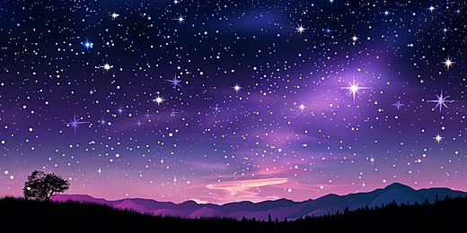
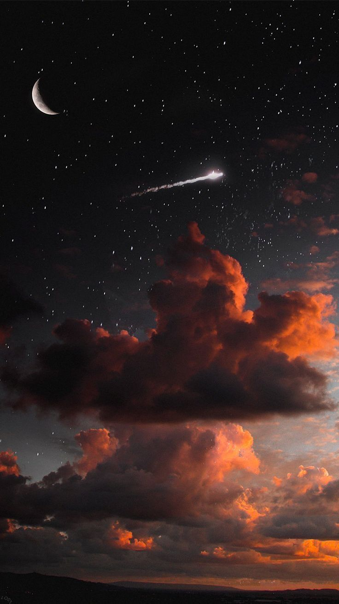
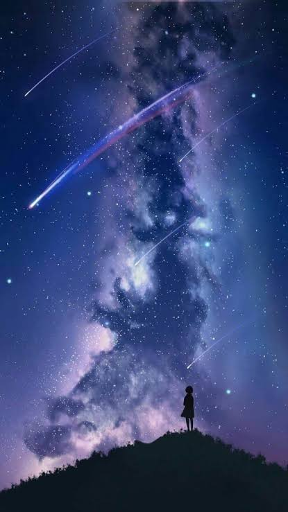
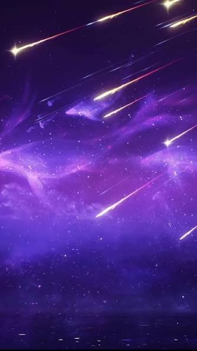

Viaja más allá de las nubes y descubre los secretos que esconden las estrellas.
Aprende sobre las constelaciones, las lluvias de estrellas, los planetas y los fenómenos más sorprendentes del universo. Cada sección está llena de curiosidades, datos fascinantes y aventuras cósmicas que te harán mirar el cielo con otros ojos.



A pesar de su nombre, las estrellas fugaces no son estrellas. Se trata de pequeños fragmentos de roca, polvo o metal que viajan por el espacio y que, en ocasiones, se acercan a nuestro planeta.
Cuando uno de estos fragmentos entra en la atmósfera terrestre, puede alcanzar velocidades impresionantes de miles de kilómetros por hora. El rozamiento con el aire genera un intenso calor que hace que el objeto brille, dejando una luminosa estela en el cielo nocturno.
Ese destello de luz recibe el nombre de meteoro. La mayoría son tan pequeños que se desintegran por completo antes de llegar al suelo, por lo que no representan ningún peligro para las personas.
En algunas épocas del año, la Tierra atraviesa regiones del espacio llenas de partículas dejadas por antiguos cometas. Cuando esto sucede, pueden observarse numerosas estrellas fugaces en una sola noche, dando lugar a las famosas lluvias de estrellas.
Durante siglos, las estrellas fugaces han cautivado a la humanidad. Muchas culturas creían que eran mensajes del cielo, señales mágicas o incluso la oportunidad perfecta para pedir un deseo.
Pero ¿cuál es su verdadero secreto? Aunque parecen estrellas viajando por el firmamento, en realidad son pequeños fragmentos de roca, polvo o metal que recorren el espacio a gran velocidad.
Cuando estos viajeros espaciales entran en la atmósfera terrestre, el rozamiento con el aire provoca que se calienten hasta brillar intensamente. Ese breve destello luminoso es lo que conocemos como una estrella fugaz.
Lo más sorprendente es que muchas de estas partículas son más pequeñas que una moneda. Sin embargo, su enorme velocidad les permite iluminar el cielo y crear uno de los espectáculos más hermosos de la naturaleza.
"Cada estrella fugaz es una historia del universo escrita con luz."